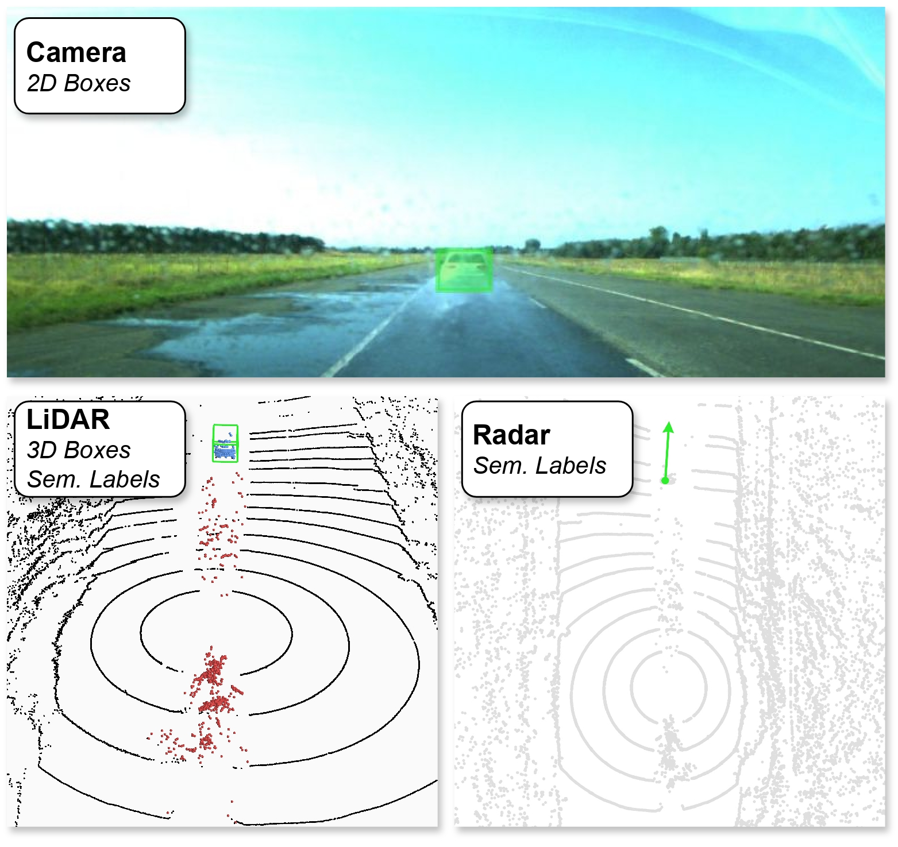

Label-Efficient Semantic Segmentation of LiDAR Point Clouds in Adverse Weather Conditions Aldi Piroli, Vinzenz Dallabetta, Johannes Kopp, Marc Walessa, Daniel Meissner, Klaus Dietmayer IEEE Robotics and Automation Letters (RA-L) 2024 arxiv / project page / video
 SemanticSpray++: A Multimodal Dataset for Autonomous Driving in Wet Surface Conditions Aldi Piroli, Vinzenz Dallabetta, Johannes Kopp, Marc Walessa, Daniel Meissner, Klaus Dietmayer IEEE Intelligent Vehicles Symposium (IV 2024) arxiv / project page / code
Towards Robust 3D Object Detection In Rainy Conditions Aldi Piroli, Vinzenz Dallabetta, Johannes Kopp, Marc Walessa, Daniel Meissner, Klaus Dietmayer IEEE International Conference on Intelligent Transportation Systems (ITSC) 2023 arxiv / project page / video
LS-VOS: Identifying Outliers in 3D Object Detections Using Latent Space Virtual Outlier Synthesis Aldi Piroli, Vinzenz Dallabetta, Johannes Kopp, Marc Walessa, Daniel Meissner, Klaus Dietmayer IEEE International Conference on Intelligent Transportation Systems (ITSC) 2023 arxiv / project page
SemanticSpray Dataset Aldi Piroli, Vinzenz Dallabetta, Johannes Kopp, Marc Walessa, Daniel Meissner, Klaus Dietmayer project page / video / code
Energy-based Detection of Adverse Weather Effects in LiDAR Data Aldi Piroli, Vinzenz Dallabetta, Johannes Kopp, Marc Walessa, Daniel Meissner, Klaus Dietmayer IEEE Robotics and Automation Letters (RA-L) 2023 arxiv / project page / video
Detection of Condensed Vehicle Gas Exhaust in LiDAR Point Clouds Aldi Piroli, Vinzenz Dallabetta, Marc Walessa, Daniel Meissner, Johannes Kopp, Klaus Dietmayer IEEE International Conference on Intelligent Transportation Systems (ITSC) 2022 arxiv
Robust 3D Object Detection in Cold Weather Conditions Aldi Piroli, Vinzenz Dallabetta, Marc Walessa, Daniel Meissner, Johannes Kopp, Klaus Dietmayer IEEE Intelligent Vehicles Symposium (IV) 2022 arxiv
LMB Filter Based Tracking Allowing for Multiple Hypotheses in Object Reference Point Association Martin Herrmann, Aldi Piroli, Jan Strohbeck, Johannes Müller, Michael Buchholz IEEE International Conference on Multisensor Fusion and Integration for Intelligent Systems (MFI) 2020 arxiv